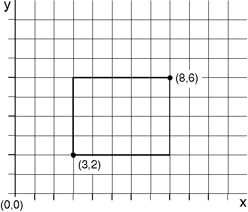
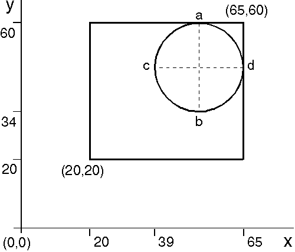
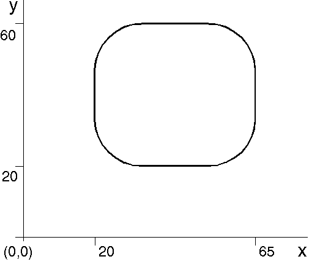

At its simplest, GpiBox draws a rectangular box with one corner at the current position and the diagonally-opposite corner at a position that you specify. The sides of the box are parallel to the x- and y-axes. Like GpiPolyLine, GpiBox lets you draw a number of connected lines using a single function rather than four separate GpiLine, functions. The current position is unchanged by GpiBox.
Note: The start and end position of any closed shape are always the same. Therefore the current position is unchanged after drawing a closed figure. The GpiBox primitive is shown in the following figure.

The Box
The current position is (3,2) and the corner position is at (8,6). When the box has been drawn, the current position remains at (3,2).
In addition to the corner position, GpiBox accepts as input an option for rounded corners and for filled interior. The PM programming interface rounds the corners of a box by drawing an elliptical section in place of the square corner. Two GpiBox parameters, IHRound and IVRound, represent the horizontal and vertical length of the full axis of the ellipse used to round each corner. If the two values are equal, a quarter-circle is used for the rounding. If the two values are 0, no rounding is performed. The following figure shows an example of rounding corners using a quarter-circle. Quarter-Circle Box-Corner Rounding
The current position is (20,20). GpiBox is called with a corner position of (65,60) and an identical vertical and horizontal rounding value of 26.
The following figure shows the complete result. The intermediate steps are not visible to the user of your application.
Box with Rounded Corners
All four corners are rounded with identical values.
Since GpiBox can be used to define a closed figure, it also accepts as input a long value signifying a filled interior. The long value lControl can be any of the following:
Value
The pattern that fills the interior and other drawing options are controlled by the data structure AREABUNDLE. GpiFullArc is the only other line and arc primitive that can be used to define a closed figure.